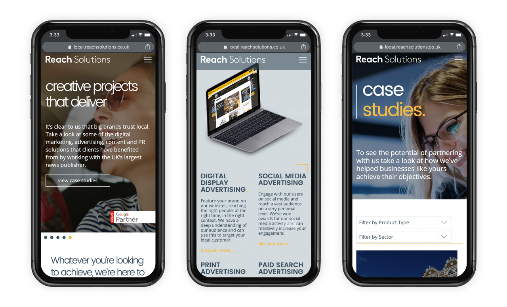

About me
Hello! I'm Sam Fletcher a Digital Designer based in Manchester. I am currently employed by Reach PLC and working in the Manchester Evening News office.
Reach Solutions mobile
My skills
- Graphic Design
- Web Design
- Video Animation
- Video Editing
- HTML Advertising
Favourite places that I have travelled to
Here are some of my favourite places that I have travelled to. Please click on the links to find out more